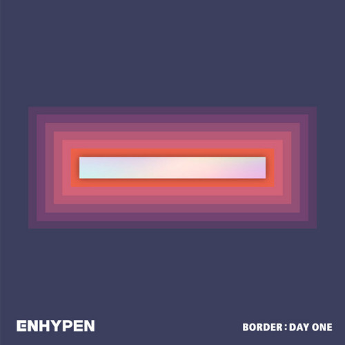

Yang Jung Won
Pemilik nama asli Yang Jung Won ini adalah anggota ENHYPEN yang dipilih sebagai leader. Jungwon lahir pada 9 Februari 2004 dan usianya masih 16 tahun (usia internasional). Selain leader, posisinya di dalam grup adalah sebagai vokalis dan dancer. Anggota berkewarganegaraan Korea ini menjalani masa trainee selama 1 tahun 4 bulan di BigHit Labels. Dalam acara I-LAND, Jungwon menduduki posisi pertama sebagai line debut dengan perolehan suara mencapai 1.417.620 dari penggemar.
Lee Hee Seung
Heeseung adalah anggota tertua di ENHYPEN, yaitu berusia 19 tahun. Ia lahir di Namyangju, Korea Selatan pada 15 Oktober 2001. Pemilik nama asli Lee Hee Seung ini telah menjalani masa trainee di Big Hit Labels selama 3 tahun dan 1 bulan. Heeseung disebut-sebut dekat dengan anggota TXT, rekan satu agensinya karena pernah menjalani masa trainee bersama. Heeseung menduduki posisi kelima dalam line debut I-LAND, dengan jumlah suara mencapai 1.137.323 dan mengantarnya debut bersama ENHYPEN.
Jay Park
Pemilik nama asli Jay Park ini lahir di Seattle, Amerika pada 20 April 2002. Saat ini, Jay berusia 18 tahun dan posisinya di dalam grup adalah sebagai dancer dan rapper. Jay pindah ke Korea pada usia 9 tahun dan memiliki nama Korea Park Jong Seong. Ia telah menjalani masa trainee di Big Hit Labels selama 2 tahun dan 11 bulan. Jay menduduki posisi kedua dalam line debut I-LAND dengan perolehan 1.181.889 suara dari penggemar.
Jake Sim
Jake adalah anggota ENHYPEN yang lahir di Autralia pada 15 November 2002, dan usianya masih 18 tahun. Pemilik nama asli Jake Sim ini ternyata juga memiliki nama Korea, Shim Jae Yun. Posisinya di dalam grup adalah sebagai dancer dan rapper. Dalam line debut I-LAND, Jake menduduki posisi ketiga dengan perolehan suara mencapai 1.179.663. Masa trainee-nya di Big Hit Labels juga terbilang cukup singkat, yaitu 9 bulan.
Park Sung Hoon
Pemilik nama asli Park Sung Hoon ini adalah anggota ENHYPEN yang bersal dari Korea. Ia lahir di Namyangju pada 8 Desember 2002 dan usianya masih 17 tahun. Posisi Sunghoon di dalam grup adalah sebagai dancer, vokalis dan visual. Ia menjalani masa trainee di Big Hit Labels selama 2 tahun dan 1 bulan. Sunghoon berhasil menduduki posisi keenam dalam line debut I-LAND dengan perolehan 1.088.413 suara dari penggemar. Sebelum menjadi anggota ENHYPEN, Sungoon ternyata adalah atlet figure skating. Ia juga pernah meraih medali silver pada Novice Champion of Asia Figue Skating Trophy 2015 dan Novice Champion of 2015 Lombardia Trophy.
Kim Sun Oo
Pemilik nama asli Kim Sun Oo ini lahir di Suwon, Gyeonggi, Korea Selatan pada 24 Juni 2003, dan usianya kini 17 tahun. Posisinya di dalam grup adalah sebagai vokalis. Sama seperti Jake, Masa trainee-nya di Big Hit Labels juga terbilang cukup singkat, yaitu selama 10 bulan. Sebenarnya, saat voting penggemar di episode final I-LAND diumumkan, Sunoo menduduki posisi kedelapan dengan suara 935.771. Namun, berkat keputusan produser, Sunoo akhirnya berhasil masuk dalam tim debut.
Nishimura Riki
Ni-ki adalah anggota termuda di ENHYPEN, dan memiliki kewarganegaraan Jepang. Pemilik nama asli Nishimura Riki ini lahir di Okayama, Jepang pada 9 Desember 2005, dan usianya masih 14 tahun. Ni-ki menjalani masa trainee di Big Hit Labels selama 8 bulan. Posisinya di dalam gurp adalah sebagai main dancer dan rapper. Ni-ki menduduki posisi keenam dalam line debut I-LAND dengan perolehan 1.140.718 suara dari penggemar yang mengantarnya debut bersama ENHYPEN.
Album
Border : Day One

- Intro: Walk the Line
- Given-Taken
- Let Me in (20 CUBE)
- 10 Months
- Flicker
- Outro:Cross the Line
Border : Carnival
- Intro : The Invitation
- Drunk-Dazed
- FEVER
- Not For Sale
- Mixed Up
- Outro : The Wormhole